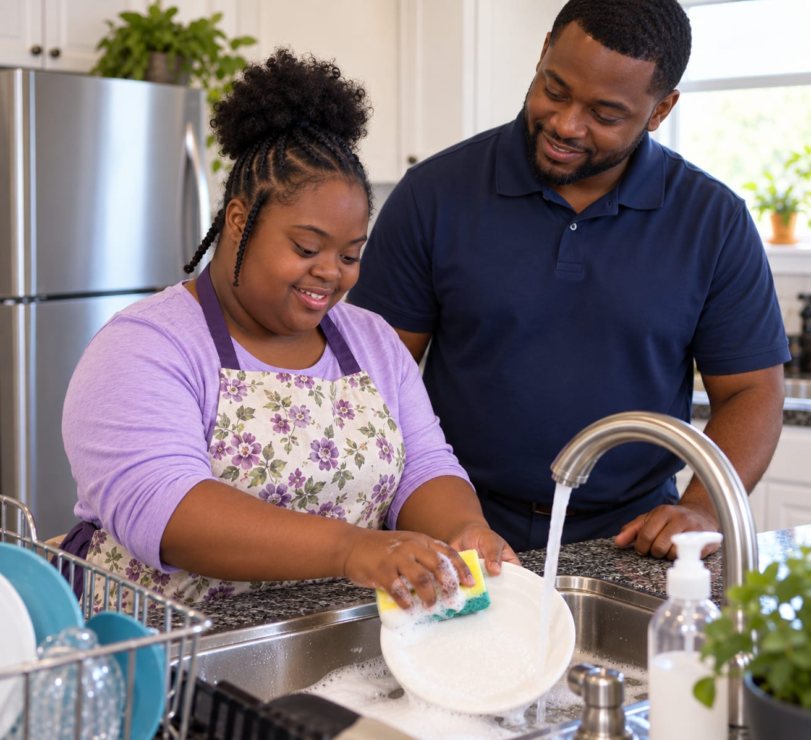

Homemaker Personal Care (HPC)
Individualized support to help individuals remain safe, healthy, and independent at home and in the community.
Compassionate, person-centered home and community based services for individuals with intellectual and developmental disabilities, seniors, veterans, and anyone who needs a hand maintaining their independence.

Aston Global Healthcare Services is an Ohio-based provider of home and community based services. We help individuals live safely, independently, and meaningfully in their own homes and communities.
We work alongside individuals, families, guardians, county Boards of Developmental Disabilities, Service & Support Administrators, nurses, and other professionals to build support systems that hold up day to day, week to week.
More about us
Every service below is built around the individual — their goals, their routines, their preferences. Support is delivered according to what is authorized in each person's service plan.
Individualized support to help individuals remain safe, healthy, and independent at home and in the community.
Temporary support and relief for individuals and the family members or caregivers who support them.
Technology-supported oversight that helps individuals maintain independence while still receiving appropriate monitoring.
Help living as independently as possible, with the right amount of assistance in the right places.
Consistency matters. We work to keep the same familiar faces in your routine.
Dependable backup staffing so services don't stop when someone is out.
Services built around the individual — not the other way around.
We work closely with families, guardians, SSAs, county Boards of DD, and nurses.
We don't believe in a one-size-fits-all approach. Every person has different goals, strengths, preferences, communication styles, family relationships, cultural backgrounds, health needs, and dreams for the future.


Whether you're a family looking for support or an SSA making a referral, we'll walk you through the next step.